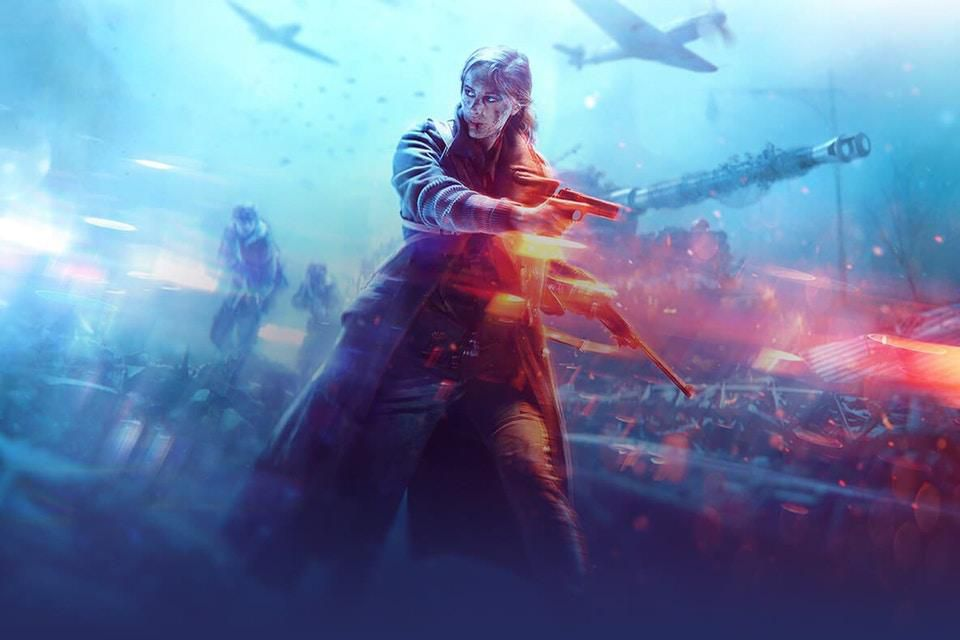

Battlefield V is a first-person shooter video game developed by EA DICE and published by Electronic Arts. Battlefield V is the sixteenth installment in the Battlefield series. It was released worldwide for Microsoft Windows, PlayStation 4, and Xbox One on November 20, 2018. Those who pre-ordered the Deluxe Edition of the game were granted early access to the game on November 15, 2018, and Origin Access Premium subscribers on PC received access to the game on November 9, 2018. The game is based on World War II and is a thematic continuation of its World War I based precursor Battlefield 1.
Pre-release reception of the game was mixed, with the announcement trailer causing backlash from fans of the series for the degree of historical inaccuracy and the inclusion of female soldiers. Upon release, Battlefield V received generally favourable reviews from critics, being praised for its gameplay but criticized for its shortage of content at launch and lack of innovation. The game sold 7.3 million copies by the end of 2018 but was a commercial disappointment for Electronic Arts.
